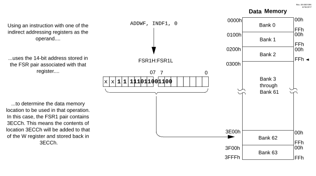

In addition to the INDF operand, each FSR register pair also has four additional indirect operands. Like INDF, these are “virtual” registers that cannot be directly read or written. Accessing these registers actually accesses the location to which the associated FSR register pair points and also performs a specific action on the FSR value. They are:
In this context, accessing an INDF register uses the value in the associated FSR register without changing it. Similarly, accessing a PLUSW register gives the FSR value an offset in the W register; however, neither W nor the FSR is actually changed in the operation. Accessing the other virtual registers changes the value of the FSR register.

Operations on the FSRs with POSTDEC, POSTINC and PREINC affect the entire register pair; that is, rollovers of the FSRnL register from FFh to 00h carry over to the FSRnH register. On the other hand, results of these operations do not change the value of any flags in the STATUS register (e.g., Z, N, OV, etc.).
The PLUSW register can be used to implement a form of Indexed Addressing in the data memory space. By manipulating the value in the W register, users can reach addresses that are fixed offsets from pointer addresses. In some applications, this can be used to implement some powerful program control structure, such as software stacks, inside of data memory.